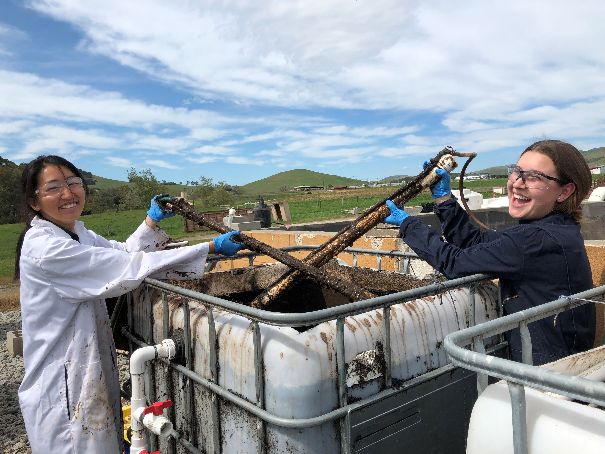

High School
- Newspaper
- I started Tiger Times Online (ttonl.org), the website version of our awardwinning print paper.
- ttonl.org was built on Wordpress, where I would very occasionally use HTML to fix some formatting issues.
- We got our first award in its debut year! Gave up a lot of sleep that year, but I was pretty proud of our website team!
- Global Issues Network
- GIN was a global issues education and awareness club.
- I helped organize fundraisers, marketing campaigns, education/awareness programs.
- I got to explore my interests in the environment through GIN.
- I tried to start a "Green Initiative Program," designed to promote environmental conscious habits using data (i.e. energy usage of lights and technology). It was a small first step towards my career interests in sustainability.
College

- Cal Poly Part 1 - Undergrad!
- Environmental Engineering
- Definition: Engineering field associated with maintaining our environmental resources (i.e. air, water, soil).
- I am also a licensed engineer-in-training.
- Working in Sustainability
- I worked as a technical intern for the Cal Poly Facilities Department. I created utility dashboards and communicated my data analyses to students and staff.
- Cal Poly Part 2 - Graduate School!
- For my master's degree, I did research on biological treatment methods for dairy wastewater. You can read my thesis here.
- It was through my master's thesis where I got more comfortable around working with data and that maybe field work wasn't for me.

Post-Grad
- Through this coding bootcamp, I hope to gain the technical skills that can help me build my own portfolio, where I can showcase myself and my work in data! In the long run, I hope to make sustainability more accessible for organizations that impact people's lives.